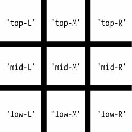

Dicionários#
Assim como uma lista, um dicionário é uma coleção mutável de muitos valores.
Mas, diferentemente dos índices de listas, os índices de dicionários podem usar muitos tipos de dados diferentes, não apenas números inteiros.
Os índices para dicionários são chamados de chaves, e uma chave com seu valor associado é chamada de par chave-valor .
No código, um dicionário é digitado entre chaves, {} .
meuGato = {'tamanho': 'gorda', 'cor': 'cinza', 'disposição': 'alta'}
meuGato['tamanho']
'Minha gata tem pelo ' + meuGato['cor']
Dicionários vs. Listas#
lista1 = ['gatos', 'cachorros', 'alces']
lista2 = ['cachorros', 'alces', 'gatos']
lista1 == lista2
dicionario1 = { 'nome': 'Zophie', 'espécie': 'gato', 'idade': '8'}
dicionario2 = {'espécie': 'gato', 'idade': '8', 'nome': 'Zophie'}
dicionario1 == dicionario2
Ao contrário das listas, os itens nos dicionários não são ordenados. O primeiro item de uma lista chamada spam seria spam[0]. Mas não existe um “primeiro” item em um dicionário. Embora a ordem dos itens seja importante para determinar se duas listas são iguais, não importa a ordem em que os pares de valores-chave são digitados em um dicionário.
aniversarios = {'Alice': '1 de abril', 'Bob': '12 de dezembro', 'Carol': '4 de março'}
while True:
print('Digite um nome: (em branco para sair)')
nome = input()
if nome == '':
break
if nome in aniversarios:
print(aniversarios[nome] + ' é o aniversário de ' + nome)
else:
print('Não tenho informações de aniversário para ' + nome)
print('Qual é o aniversário deles?')
aniversario = input()
aniversarios[nome] = aniversario
print('Banco de dados de aniversários atualizado.')
aniversarios
spam = {}
spam['first key'] = 'value'
spam['second key'] = 'value'
spam['third key'] = 'value'
list(spam)
métodos keys() , valus() e items()#
Quando você usa os métodos keys() , valus() e items() , um loop for pode iterar sobre as chaves, valores ou pares de valores-chave em um dicionário, respectivamente. Observe que os valores no valor dict_items retornado pelo método items() são tuplas da chave e do valor.
spam = {'color': 'red', 'age': 42}
for names in spam.values():
print(names)
spam['age']
for k, v in spam.items():
print('Key: ' + k + ' Value: ' + str(v))
spam = {'color': 'red', 'age': 42}
for v in spam.values():
print(v)
for k in spam.keys():
print(k)
for i in spam.items():
print(i)
Você também pode usar atribuição múltipla em um loop for para atribuir a chave e o valor a variáveis separadas.
spam = {'cor': 'vermelho', 'idade': 42}
for k, v in spam.items():
print('A Chave: (' + k + ') tem Valor: (' + str(v) +')')
O método get()#
os dicionários têm um método get() que aceita dois argumentos: a chave do valor a ser recuperado e um valor substituto a ser retornado se essa chave não existir.
picnicItems = {'maçãs': 5, 'copos': 2}
'Estou trazendo ' + str(picnicItems.get('copos', 0)) + ' copos.'
'Estou trazendo ' + str(picnicItems('ovos')) + ' ovos.'
'Estou trazendo ' + str(picnicItems.get('ovos')) + ' ovos.'
'Estou trazendo ' + str(picnicItems.get('ovos',0)) + ' ovos.'
O método setdefault()#
spam = {'nome': 'Joao', 'idade': 5}
if 'cor' not in spam:
spam['cor'] = 'negro'
spam
spam = {'nome': 'Joao', 'idade': 5}
spam.setdefault('cor', 'negro')
spam
spam.setdefault('altura', 'média')
spam
mensagem = 'Era um dia claro e frio de abril e os relógios marcavam treze horas.'
count = {}
for caractere in mensagem:
count.setdefault(caractere, 0)
count[caractere] = count[caractere] + 1
print(count)
import pprint
mensagem = 'Era um dia claro e frio de abril e os relógios marcavam treze horas.'
count = {}
for caractere in mensagem:
count.setdefault(caractere, 0)
count[caractere] = count[caractere] + 1
pprint.pprint(count)
import pprint
mensagem = 'Era um dia claro e frio de abril e os relógios marcavam treze horas.'
count = {}
for caractere in mensagem:
count.setdefault(caractere, 0)
count[caractere] = count[caractere] + 1
print(pprint.pformat(count))

theBoard = {'top-L': ' ', 'top-M': ' ', 'top-R': ' ',
'mid-L': ' ', 'mid-M': ' ', 'mid-R': ' ',
'low-L': ' ', 'low-M': ' ', 'low-R': ' '}
def printBoard(board):
print(board['top-L'] + '|' + board['top-M'] + '|' + board['top-R'])
print('-+-+-')
print(board['mid-L'] + '|' + board['mid-M'] + '|' + board['mid-R'])
print('-+-+-')
print(board['low-L'] + '|' + board['low-M'] + '|' + board['low-R'])
printBoard(theBoard)
theBoard = {'top-L': 'O', 'top-M': 'O', 'top-R': 'O', 'mid-L': 'X', 'mid-M':
'X', 'mid-R': ' ', 'low-L': ' ', 'low-M': ' ', 'low-R': 'X'}
def printBoard(board):
print(board['top-L'] + '|' + board['top-M'] + '|' + board['top-R'])
print('-+-+-')
print(board['mid-L'] + '|' + board['mid-M'] + '|' + board['mid-R'])
print('-+-+-')
print(board['low-L'] + '|' + board['low-M'] + '|' + board['low-R'])
printBoard(theBoard)
theBoard = {'top-L': ' ', 'top-M': ' ', 'top-R': ' ', 'mid-L': ' ', 'mid-M':
' ', 'mid-R': ' ', 'low-L': ' ', 'low-M': ' ', 'low-R': ' '}
def printBoard(board):
print(board['top-L'] + '|' + board['top-M'] + '|' + board['top-R'])
print('-+-+-')
print(board['mid-L'] + '|' + board['mid-M'] + '|' + board['mid-R'])
print('-+-+-')
print(board['low-L'] + '|' + board['low-M'] + '|' + board['low-R'])
turn = 'X'
for i in range(9):
printBoard(theBoard)
print('Turn for ' + turn + '. Move on which space?')
move = input()
theBoard[move] = turn
if turn == 'X':
turn = 'O'
else:
turn = 'X'
printBoard(theBoard)
Para adicionar elementos num dicionário basta associar uma nova chave ao objeto e dar um valor a ser associado a ela. No Código 16 vamos colocar a informação Idade em dados_cliente.
dados_cliente = { ‘Nome’: ‘Renan’, ‘Endereco’: ‘Rua Cruzeiro do Sul’, ‘Telefone’: ‘982503645’ }
print(dados_cliente) # {‘Nome’: ‘Renan’, ‘Endereco’: ‘Rua Cruzeiro do Sul’, ‘Telefone’: ‘982503645’}
dados_cliente[‘Idade’] = 40
print(dados_cliente) # {‘Nome’: ‘Renan’, ‘Endereco’: ‘Rua Cruzeiro do Sul’, ‘Telefone’: ‘982503645’, ‘Idade’: 40} Código 16. Adicionando item no Dicionário Para remover um item do dicionário, podemos usar o método pop(), como vemos no Código 17.
dados_cliente = { ‘Nome’: ‘Renan’, ‘Endereco’: ‘Rua Cruzeiro do Sul’, ‘Telefone’: ‘982503645’ }
print(dados_cliente) # {‘Nome’: ‘Renan’, ‘Endereco’: ‘Rua Cruzeiro do Sul’, ‘Telefone’: ‘982503645’}
dados_cliente.pop(‘Telefone’, None)
print(dados_cliente) # {‘Nome’: ‘Renan’, ‘Endereco’: ‘Rua Cruzeiro do Sul’} Código 17. Removendo item no Dicionário Na linha 9 do Código 17 temos o uso do método pop(), usado para remover o item ‘Telefone’ do dicionário dados_clientes. Temos na chamada do método o parâmetro None, que é passado depois da chave a ser removida. O None serve para que a mensagem de erro KeyError não apareça devido a remoção de uma chave inexistente.
Também poderíamos usar a palavra-chave del, que remove uma chave e o valor associado a ela no dicionário. Isso se faz por meio da passagem no parâmetro, como vemos no exemplo do Código 18.
dados_cliente = { ‘Nome’: ‘Renan’, ‘Endereco’: ‘Rua Cruzeiro do Sul’, ‘Telefone’: ‘982503645’ }
print(dados_cliente) # {‘Nome’: ‘Renan’, ‘Endereco’: ‘Rua Cruzeiro do Sul’, ‘Telefone’: ‘982503645’}
del dados_cliente[‘Telefone’]
print(dados_cliente) # {‘Nome’: ‘Renan’, ‘Endereco’: ‘Rua Cruzeiro do Sul’}
REVISÕES#
https://www.devmedia.com.br/colecoes-no-python-listas-tuplas-e-dicionarios/40678
Considere uma lista de dicionários, onde cada dicionário representa um estudante e contém as chaves “nome”, “idade” e “nota_final”. Escreva uma função em Python chamada aprovados_por_idade que receba como entrada essa lista de dicionários e a idade mínima desejada. A função deve retornar uma lista com os nomes dos alunos que têm idade igual ou superior à idade mínima e cuja nota final seja maior ou igual a 7.
Por exemplo, considerando a seguinte lista de dicionários:
alunos = [
{"nome": "João", "idade": 20, "nota_final": 8.5},
{"nome": "Maria", "idade": 22, "nota_final": 6.0},
{"nome": "Pedro", "idade": 19, "nota_final": 7.2},
{"nome": "Ana", "idade": 21, "nota_final": 9.0}
]
def aprovados_por_idade(alunos, idade_minima):
# seu código aqui
Se a função aprovados_por_idade(alunos, 20) for chamada, ela deve retornar [“João”, “Ana”], pois João e Ana têm idade igual ou superior a 20 anos e nota final maior ou igual a 7.
def aprovados_por_idade(alunos, idade_minima):
aprovados = []
for aluno in alunos:
if aluno["idade"] >= idade_minima and aluno["nota_final"] >= 7:
aprovados.append(aluno["nome"])
return aprovados
aprovados_por_idade(alunos, 18)